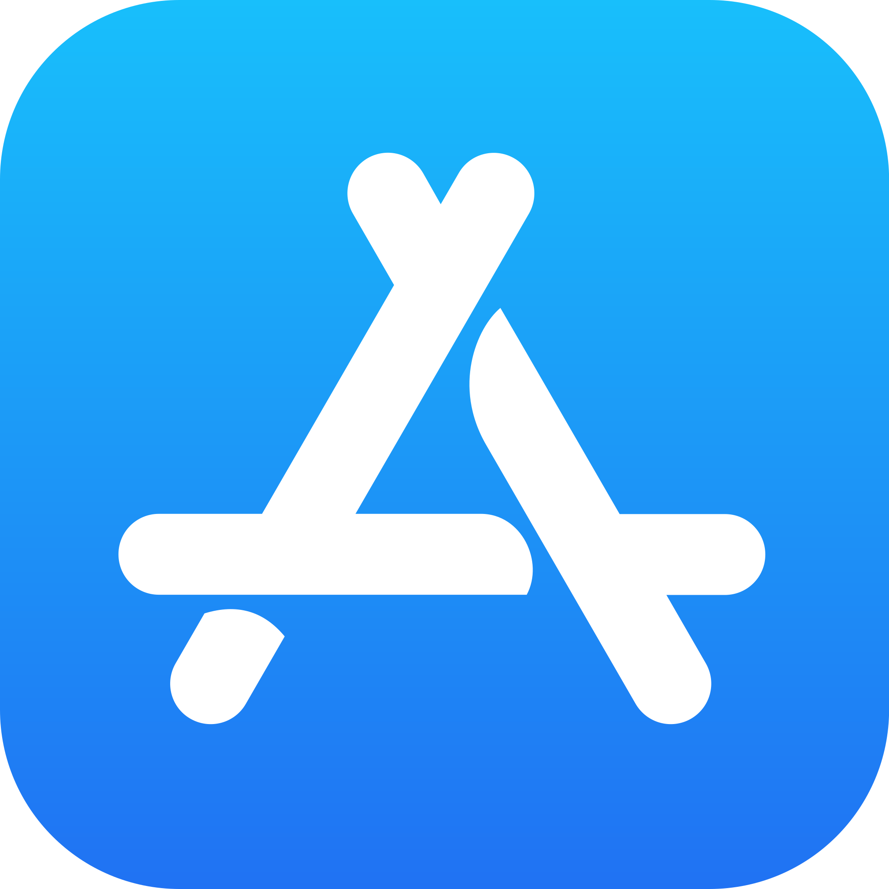
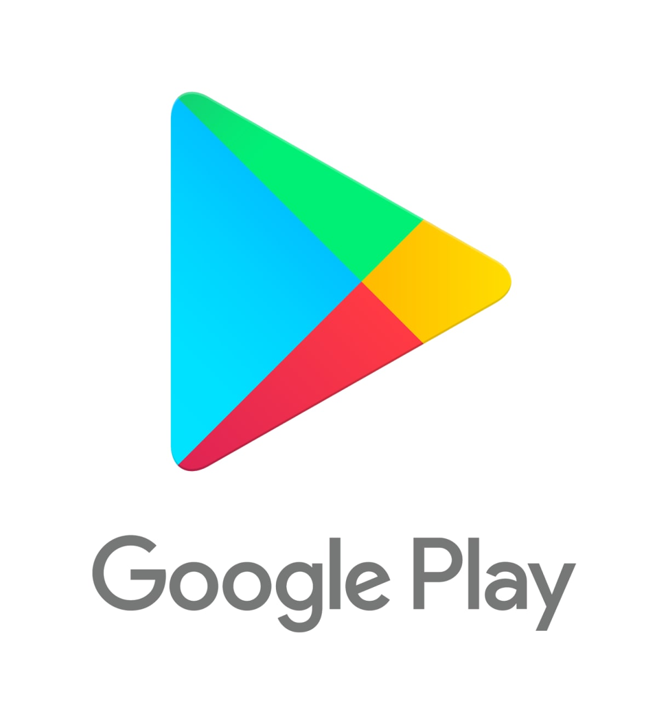

<html lang="en">
  <head>
    <title>Portfolio</title>
    <link rel="stylesheet" href="styles.css" />
    <link
      rel="icon"
      type="image/png"
      href="images/favicon-32x32.png"
      sizes="32x32"
    />
    <link rel="icon" type="image/png" href="favicon-16x16.png" sizes="16x16" />
  </head>
</html>

<body>
  <div id="nav-container">
    <div id="navbar">
      <a class="button" href="/index.html">Home</a>
      <a class="button" href="/index.html#projects">Projects</a>
      <a class="button" href="/about.html#resume">Resume</a>
      <a class="button" href="/index.html#contact">Contact</a>
    </div>
  </div>

  <div id="img-hero">
    
  </div>
  <section id="project-description">
    <div class="item">
      <div id="item-image">
        
      </div>
      <div id="item-info">
        <h2>Duration: May -> August 2023</h2>
        <a href="https://apps.apple.com/us/app/rock-on-raccoon/id6450372557"
          ></a>
        <a
          href="https://play.google.com/store/apps/details?id=com.MassDiGI.TeamCottonCandy&hl=en_US"
          ></a>
        <h1>About the Game</h1>
        <p>
          <i>Rock On, Raccoon!</i> is a mobile rhythm game where you play as a
          raccoon garage band and battle other animal bands in order to become
          rock stars and reclaim your turf! Play through 5 different genres of
          music beat mapped at 4 different difficulties, and aim for a high
          score!
        </p>
        <ul>
          <li><b>Team size:</b> 6</li>
          <li><b>Engine:</b> Unity</li>
          <li><b>Language:</b> C#</li>
        </ul>
      </div>
    </div>
    <div class="project-details">
      <iframe
        width="560"
        height="315"
        src="https://www.youtube.com/embed/ssWZExkMvnk?si=axPy5gMHpAvHQLP2"
        title="YouTube video player"
        frameborder="0"
        allow="accelerometer; autoplay; clipboard-write; encrypted-media; gyroscope; picture-in-picture; web-share"
        referrerpolicy="strict-origin-when-cross-origin"
        allowfullscreen
      ></iframe>
      <h1>Origin</h1>
      <p>
        <i>Rock On, Raccoon!</i> is a game I worked on during MassDigi's Summer
        Innovation Program in 2023. SIP was an internship that spanned over the
        course of the summer where each team made a unique mobile game from
        concept to publication. My team of 6 ended up wanting to make a short
        mobile rhythm game, and thus, <i>Rock On, Raccoon!</i> was born.
      </p>

      <h1>My Contributions</h1>
      <p>
        Firstly, I was the team's character designer, artist, and animator. I
        designed and animated 6 different animal bands, and worked with the team
        on what aesthetic we wanted to go with for each of them. I also worked
        on the design team and created the beatmaps for all of the songs in the
        game.
      </p>

      <h2>Art</h2>
      <p>
        I created each animal band from concepting to animation, and worked on
        some UI as well. Each animal band had a unique color palette, as well as
        a highlight color that was unique to the band.
      </p>

      <div class="gallery">
        
        
        
        
        
        
        
        
        
        
        
        
        
      </div>

      <h2>Design</h2>
      <p>
        I worked with the programmers to figure out how to refine the process of
        importing beatmaps into the game. We decided to use a system that took
        imported .txt files and spawned the notes based on a system of numbers
        that corresponded with certain rows of notes. <br /><br />In order to
        make this easier for me to beatmap, I created a Google Sheets document
        (seen below) that visualizes where the notes will be on the screen. It
        also includes cues for changes in lighting, dialogue cues, time
        signature, and tempo. This way, it's easier to map out the levels and
        focus on gamefeel and flow without worrying about which numbers
        corresponded to what. This also allows for future developers to easily
        understand how the system works. Especially because I saved all the
        previous beatmaps in the document for easy reference.
      </p>
      <iframe
        id="table"
        src="https://docs.google.com/spreadsheets/d/e/2PACX-1vRAgwzAA6MmS4OH6gcsYxFh2EmAISU5hdkU0kSjd7f-zDS5BfT8dxGPKnVL3326jZBkSe9T-s5rS5NB/pubhtml?widget=true&amp;headers=false"
      ></iframe>
      <a
        class="link-button hvr-forward"
        href="https://docs.google.com/spreadsheets/d/1rVOBF9GacEoxId49tXgowZkyLfTjMvMgPqLtVok5x94/edit?usp=sharing"
        >See Full Beatmap Document</a
      >
      <p>
        When mapping, I used my previous experience transcribing music and
        playing rhythm games to create maps that felt natural and satisfying to
        the player. Taking into account that most people would be playing this
        game with two thumbs, I mapped with the goal that there would be a
        maximum of two notes played at the same time, and through playtesting, I
        adjusted difficult or confusing sections. Overall, I'm very happy with
        how the maps feel to play, and the document I made was a total lifesaver
        when working towards that goal.
      </p>
    </div>
  </section>
  <footer>Copyright &#169; 2025 by Amanda Rowe</footer>
</body>
